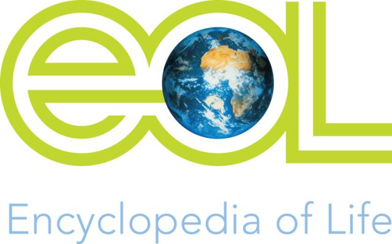

Global Biotic Interactions (GloBI) provides an infrastructure and data service that aggregates or combines existing biotic interaction datasets to provide easy access to biotic interaction data. Actually, some pages (here, here and here) of this website are built on top of that infrastructure. The infrastructure software itself is available on github and the data is available in various ways. Like videos? Then you might like this 2 minute GloBI introduction video.
“Biodiversity researchers have focused on diversity at the cost of ignoring the networks of interactions between organisms that characterize ecosystems.” - Kevin McCann, 2007
“An essential element of a truly inclusionary and democratic approach to science is to share data through publicly accessible data sets.” - Soranno et al., 2014
Now that folks have mapped the human genome, put a man on the moon, isn't it time to provide easy access to how, when and where organisms interact with each other so that we can better understand and better preserve our ecosystems? Perhaps GloBI can become the OpenStreetMap of ecology: a global map that shows how organisms rely on each other . . .
By providing an infrastructure to capture and share interaction data, individual biologists can focus on gathering new interaction data and analyzing existing datasets without having to spend resources on (re-) building a cyberinfrastructure to do so.
GloBI is made possible by a community of software engineers, bioinformaticists and biologists. Software engineers such as Jorrit Poelen, Göran Bodenschatz, and Robert Reiz collaborate with bioinformaticists like Chris Mungall and biologists like Jim Simons, Anne Thessen, and Brian Hayden to capture, provide access to and use interaction data that is provided by biologists and citizen scientists around the world. GloBI is funded by EOL's Rubenstein Fellowship Program.
GloBI exists because of people like yourself who share their interaction data, or refer to existing datasets that are not yet included in GloBI. Do you have some interaction data you'd like to access through GloBI? Please read this.
The Encyclopedia of Life (see blog post) and Gulf of Mexico Species Interaction Database (see blog post) are currently using GloBI's data services. We also built some web apps on top of our data services: list references and data sources, figure out who eats what and browse interactions around the globe.
The R community uses rGloBI (part of rOpenSci) to access interaction data (see Hungry Caterpillars for example). Also, students of Indiana University's Information Visualization MOOC created a Food-Web Map of the World (class of 2014) and an interactive ecosystem explorer (class of 2015) (poster, paper) using GloBI data.
Some more mentions include Global Biotic Interactions (GloBI). Bichos vemos, relaciones sí sabemos., Datos: Global Biotic Interactions and Py4Life's mini-lecture using Python and GloBI as part of Python Programming for Biologist course at Tel-Aviv University.Jorrit H. Poelen, James D. Simons and Chris J. Mungall. (2014). Global Biotic Interactions: An open infrastructure to share and analyze species-interaction datasets. Ecological Informatics. http://dx.doi.org/10.1016/j.ecoinf.2014.08.005
|  |